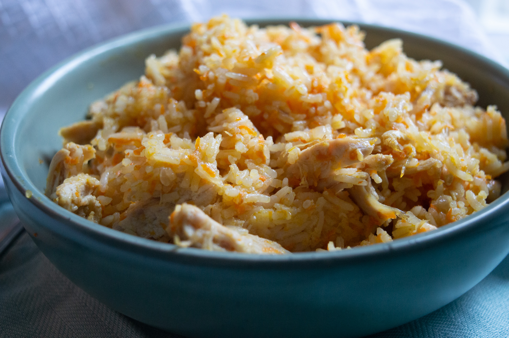

HOME
Chicken Rise

Tell me about it
This simple and delicious one-pot chicken and rice dish is a must-try for your family, and I am sure it will
become a staple weeknight meal.
It is my favorite weeknight meal to prepare because it is super quick and well-balanced!
Ingredients
- 2 Small chicken breasts
- 1 Cup of rice
- 1 Medium onion
- 2 Carrots
- 3-5 Cups of water
- 2 tbsp of oil
- Seasoning to taste
How to make it:
- Start by preparing all your ingredients; this helps speed up the cooking process.
Wash, peel, and grate carrots and set aside. Do the same with the onion.
Prepare the rice by rinsing one cup in a colander; this gets some of the starch.
- Add your diced onion with one tablespoon of oil and sauté on medium for a few minutes in a Dutch oven or
pot.
- Add raw chicken chunks and cook until browned about 5-6 minutes. Add the second tablespoon of oil if needed.
- Add grated carrots, stir, and after a few minutes, add rinsed rice.
- Mix everything well and add 3-4 cups of water. Your rice should be covered in water – don’t overfill it; it
will turn into soup.
- Simmer on low for 15-20 minutes, checking in and mixing every five or so minutes.
- Use a fork to fluff rice and serve.